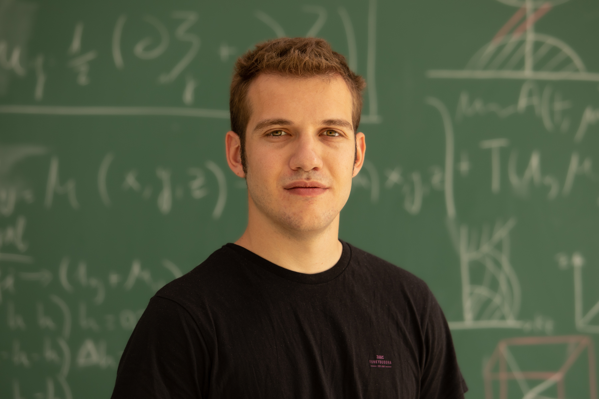

<div class="row flex-column-reverse flex-md-row py-2">
    <div class="col-md-8" id="bio">
        <h1>Markos Polkas</h1>
        <p class="text-justify">
        4th year PhD Candidate (2024), Donostia International Physics Center, San-Sebastian, Basque Country, Spain 
        </p>
        <a href="pdf/cv1.pdf">PDFs: Curriculum Vitae</a>       <a href="pdf/MarkosPolkas_PublicationList.pdf">  Publication List </a>
        </p>
        A self-introduction
        <p class="text-justify">
        Although much of my research revolves around supermassive black holes, as an astrophysics enthusiast, I aim to keep my interests broad. 
        Both supermassive black holes and the galaxies hosting them have a rich phenomenology,
        with huge data opening the era of multi-messenger astronomy (James Webb Space Telescope, Euclid, Vera C. Rubin Observatory, Event-Horizon Telescope, Ice-Cube, Pulsar Timing Arrays, and more coming). From a theory perspective, 
        scientists are struggling to identify the key aspects of fundamental cosmic-scale processes such as star formation and Active Galactic Nuclei (AGN) feedback (that means a lot of work to be done).
        Starting from the "small scales", I have dedicated a great part of my time to modeling the variability of astrophysical jets, modeling Spectral Energy Distributions (from radio to gamma-rays) of
        thermal and non-thermal origin, and understanding periodicities of massive black hole binaries in circumbinary disks. At greater (cosmological) scales, I am interested in population inference of astrophysical phenomena (e.g. sub-classes of galaxies, AGN, transient phenomena),
        for which I have been using and developing semi-analytic models of galaxy formation. 
        For the last two years of PhD, I've been focusing on Tidal Disruption Events, associated with stars being ripped apart from massive black holes, resulting in the brightest explosions in the sky.  
        I have been trying to model the rate of tidal disruption events and find the effect on black hole growth.
        Also, in the last few months, I have been studying the effects of a black hole accretion disk
        on the evolution of these events, by studying analytically the problem and making a series of hydrodynamical simulations.
        Most of my studies are in collaboration with groups and world experts (San-Sebastian, Milano, Birmingham, Athens).
        I'm just referring to my few first-author publications below, 
        but please be aware much of my work remains to be published in the upcoming year!
        </p>
        What is my occupation?
        <p class="text-justify">
        Physics in the universe can be tested by developing astrophysical models and performing simulations that can explain astronomical observations. Vice versa the data that telescopes collect
        sometimes seems bizarre and does not fit into our current understanding of stars, galaxies, black holes, etc. The information does not flow smoothly in either of these two directions; 
        many times new simulations are not being informed, and sometimes contradict, observations, while observations are reported in a somewhat agnostic way (e.g. data in non-physical units), leaving the interpretation
        for future investigations. Due to over-specialization nowadays most people identify strongly as theoretical astrophysicists or astronomers, which (for me) translates to the statement that a holistic view of your subject is impossible.
        I seek to be involved in every aspect from data extraction to simulations that will deepen my understanding. So far I am really happy I have achieved a balance, and 
        looking forward, I’m truly excited to be allowed to expand equally my research across theoretical and observational horizons. 
        <p class="text-justify">
        I program mostly with: Python3, C, bash, Fortran-77, Matlab
        </p>
        <p class="text-justify">
        Languages: Greek, English, Spanish
        </p>
        <p style="text-align:center">
            <a href="https://mail.google.com/">markospolkas@gmail.com</a> &nbsp;/&nbsp;
            <a href="https://github.com/MPolkas">GitHub</a> &nbsp;/&nbsp;
            <a href="https://youtube.com/playlist?list=PL7Pc6hSbFNHcNJqVUc6_W_ds_6t49QTEI&si=I0cVYiaIUTTuE_KK"> Youtube </a>
        </p>
    </div>
    <div class="col-md-4" style="z-index:4;">
        
    </div>
</div>

{% include publications.html %}
